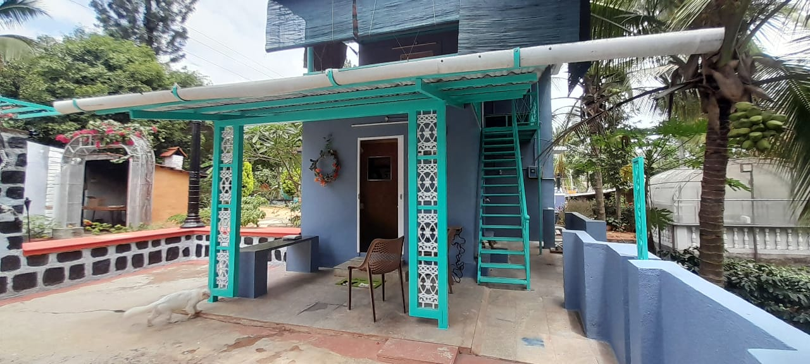
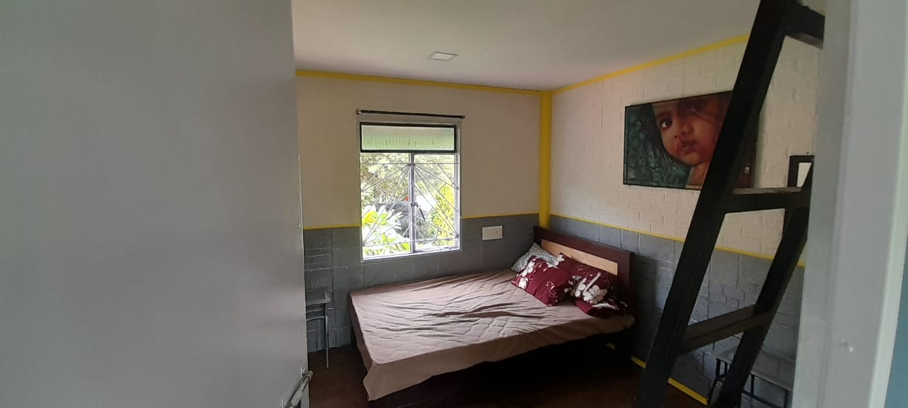
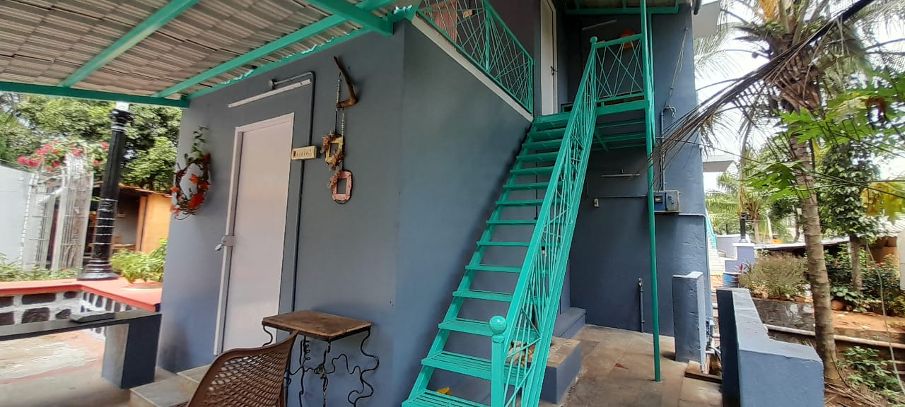
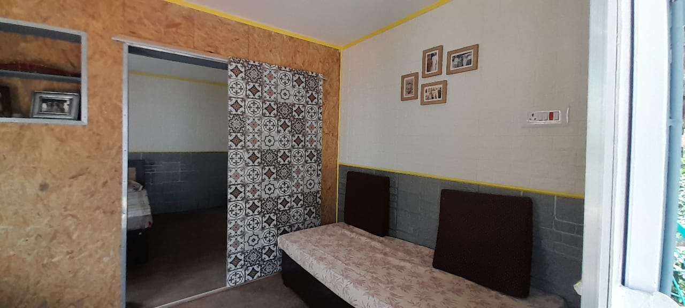

OUR CAFE PRODUCTS
Organic farm-fresh retail packages and handcrafted coffee blends created close to the earth on Salem hills. Take home the taste of Vellimalai.


Artisanal coffee brewed from fresh beans
Relax in our cozy natural ambiance


Organic farm-fresh retail packages and handcrafted coffee blends created close to the earth on Salem hills. Take home the taste of Vellimalai.
Nestled along the quiet climbing curves of Vellimalai Road, Forest Cafe was created as an escape from city rush. A family dream woven into the green slopes of Salem.
Whether you are taking a break during a road trip, gathering with family over slow-dripped artisanal roasts, or watching the mist settle through the palms, you are treated like one of our own. Every bean is grown with respect, every cup poured with love.
Sustainable shade farming & native flora preservation
Hand-sorted coffee cherries roasted on the hills
A serene stop for families, pets & solo backpackers

WOODEN COTTAGES
COZY BEDROOM
STONE GARDEN STEPS
TEA VERANDAWake up enveloped by morning valley mist and the gentle fragrance of coffee blossoms. Our handcrafted hillside wooden cottages offer a peaceful sanctuary far above the city din.
Secluded wooden rooms with forest views
Fresh farm-to-cup roasts at your veranda
Panoramic sunrises over Salem peaks
Quiet mountain nights under clear skies
“The most peaceful stop on our Salem–Yercaud journey. The Coconut Latte and warm Banana Cake were out of this world. Our children loved roaming the garden!”
“Real single-origin flavor! You can taste the genuine care from soil to sip. We bought two pouches of the 80/20 blend for home. Incredible ambience.”
“A breath of fresh hillside air. Handcrafted interiors, misty morning breeze, and the soothing sound of the stone fountain. Simply unforgettable.”